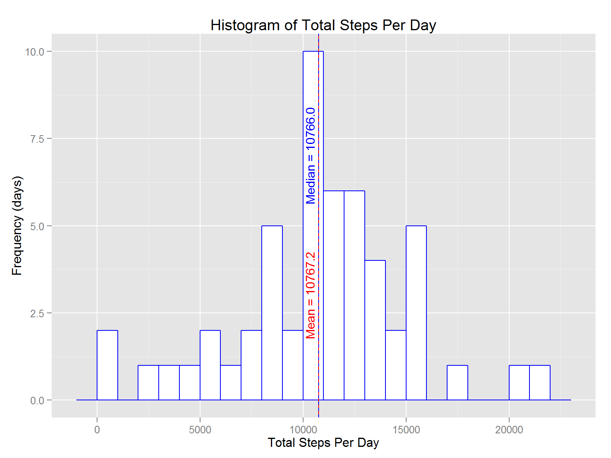
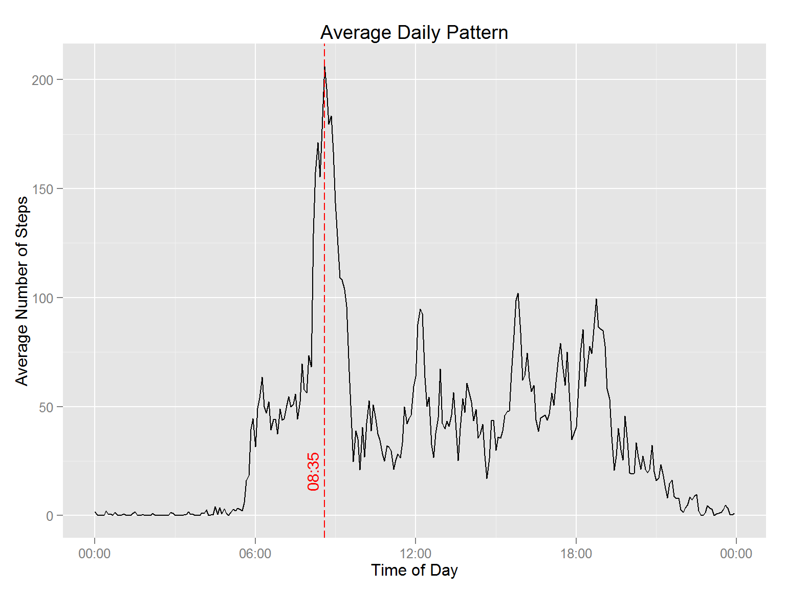
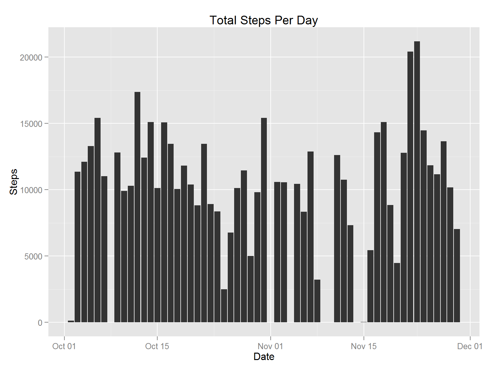
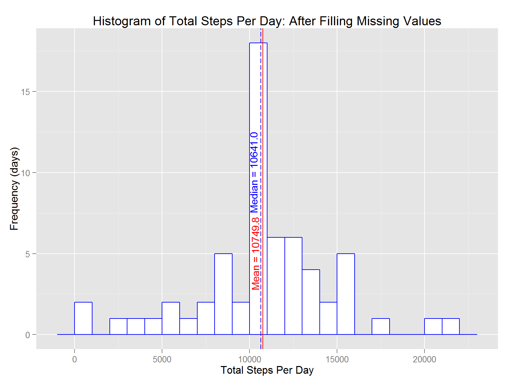
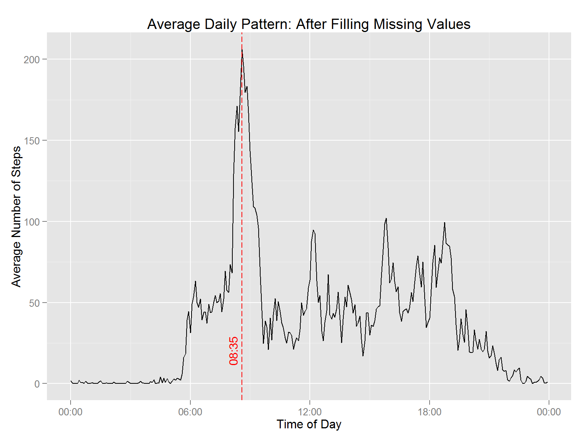
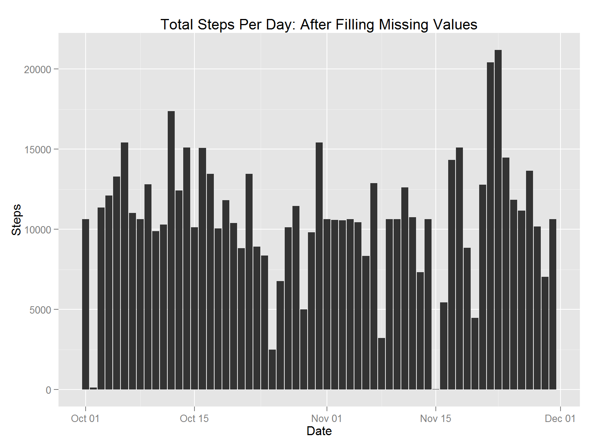
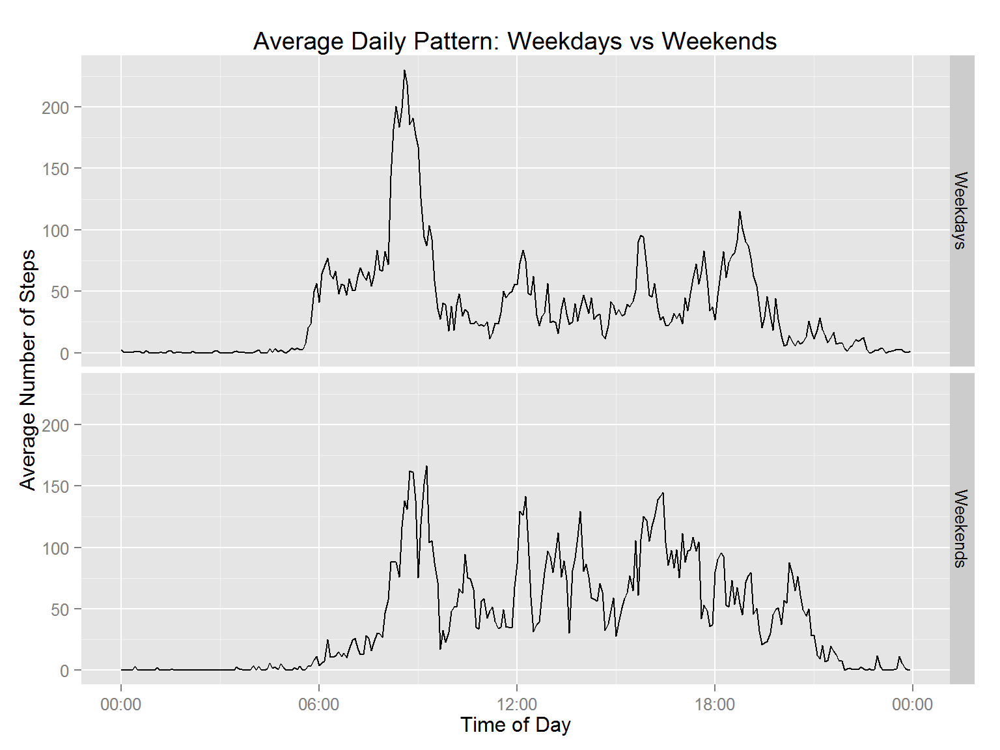

Author: David Currie
Date: July 19, 2014
This assignment makes use of data from a personal activity monitoring device. This device collects data at 5 minute intervals through out the day. The data consists of two months of data from an anonymous individual collected during the months of October and November, 2012 and include the number of steps taken in 5 minute intervals each day.
The first step is to load and condition the data for analysis. The input data is contained in a zip archive, so we will extract it to a comma separated value (.csv) file then load it into a data.frame object. For ease of analysis, the date and interval fields are combined and converted to a POSIX date field.
library(ggplot2)
library(lubridate)
library(scales)
if(!file.exists('activity.csv')){
unzip('activity.zip')
}
activity.dat<-read.csv('activity.csv')
# make some date related fields to help with plotting
activity.dat$Date<-as.Date(activity.dat$date)
activity.dat$posdate<-as.POSIXct(strptime(paste(activity.dat$date,sprintf("%04d",activity.dat$interval),sep="-"),"%Y-%m-%d-%H%M"))
activity.dat$wday<-wday(activity.dat$posdate,label=TRUE)
# the interval value is actually a time, but if it is interpreted as an integer, the plots are wrong
# make a time of day field
activity.dat$tod<-activity.dat$posdate
year(activity.dat$tod)<-2010
yday(activity.dat$tod)<-1The following graph shows a histogram of the total number of steps taken each day of the 61 days in the dataset.
# compute the sums for each day, excluding the NA values
step.sums<-sapply(unique(activity.dat$date),FUN=function(x) sum(activity.dat[activity.dat$date==x,'steps'],rm.na=TRUE))
# calculate the summary statistics
step.mean<-mean(step.sums,na.rm=TRUE)
step.median<-median(step.sums,na.rm=TRUE)
# make a dataframe for plotting
summary.df<-data.frame(Date=as.Date(unique(activity.dat$date)),Steps=step.sums)
# use ggplot to plot the histogram
hplt<-ggplot(summary.df)
hplt+stat_bin(binwidth=1000,aes(x=Steps),colour='blue',fill='white')+
ggtitle('Histogram of Total Steps Per Day')+
geom_vline(xintercept=step.mean,colour='red')+
ylab('Frequency (days)')+
xlab('Total Steps Per Day')+
annotate("text",label=sprintf('Mean = %5.1f',step.mean),x=step.mean,y=3,angle=90,vjust=-.5,colour="red",size=4)+
geom_vline(xintercept=step.median,colour='blue',linetype="dashed")+
annotate("text",label=sprintf('Median = %5.1f',step.median),x=step.median,y=7,angle=90,vjust=-.5,colour="blue",size=4)
The above graph indicates that the most common number of steps in a day was between 10000 and 11000, with 10 days reporting totals in that range. There were two days with total number of steps in excess of 20000 but also two days with 1000 or fewer steps. The distribution appears to be normal, with mean and median effectively equal.
Mean number of steps per day: 10767
Median number of steps per day: 10766
Note to reviewers: the statistics quoted above are computed in the previous code chunk and generated in the text using inline R code. This code is not echoed when the markdown is rendered. I use this technique later in the report as well.
The following figure shows the average number of steps reported in each 5 minute interval throughout the day.
# compute the means for each interval
int.means.df<-data.frame(Interval=unique(activity.dat$tod), Steps=sapply(unique(activity.dat$interval),FUN=function(x) mean(activity.dat[activity.dat$interval==x,'steps'],na.rm=TRUE)),int=unique(activity.dat$interval))
# find the interval corresponding to the maximum reading
max.int<-int.means.df[which.max(int.means.df$Steps),]
pplt<-ggplot(int.means.df,aes(x=Interval,y=Steps))
pplt+geom_line()+scale_x_datetime(labels = date_format("%H:%M"))+xlab("Time of Day")+ylab("Average Number of Steps")+
ggtitle("Average Daily Pattern")+
geom_vline(aes(colour="Max",linetype="Max"),xintercept=as.numeric(max.int[1,1]),colour='red',linetype="longdash")+
annotate("text",label=format(max.int[1,1],"%H:%M"),x=max.int[1,1],y=20,angle=90,vjust=-.5,colour="red",size=4)
As illustrated by the dashed red line, the time interval that had the highest average number of steps was 08:35 which had an average number of steps equal to 206.1698
The original dataset is missing data from some days. In this section we will attempt to use a simple algorithm to estimate a value to be used in these instances. First, we will determine how much data is missing and how it is distributed. The following figure illustrates the total number of steps reported for each day in the duration of the dataset.
# the number of rows with missing data
missing.count<-sum(is.na(activity.dat$steps))
# the days with missing data
missing.dates<-unique(activity.dat[which(is.na(activity.dat$steps)),'Date'])
# the number of observations on the days with missing data
missing.obs<-sapply(missing.dates,FUN=function(x) sum(!is.na(activity.dat[activity.dat$Date==x,'steps'])))
hplt+geom_bar(aes(x=Date,y=Steps),stat='identity',na.rm=TRUE)+ggtitle('Total Steps Per Day')## Warning: Removed 8 rows containing missing values (position_stack).
There appear to be 2304 rows with missing data, which occur on 8 separate dates. checking the data for those dates we find that they are missing data for all intervals in the day. Using the previously calculated average values for each interval, we can fill in the missing values according to the interval in which they occur. Using this approach, the histogram of total steps per day, shown below, differs from the original in that the bin containing the mean indicates an additional 8 days.
# make a copy of the original data
filled.dat<-activity.dat
# figure out which rows need to be updates
tobe.filled<-which(is.na(filled.dat$steps))
# replace the NA value with the average for that interval
filled.dat[tobe.filled,'steps']<-sapply(filled.dat[tobe.filled,'interval'],FUN=function(x) as.integer(int.means.df[int.means.df$int==x,2]))
# plot the histogram
filled.sums<-sapply(unique(filled.dat$date),FUN=function(x) sum(filled.dat[filled.dat$date==x,'steps'],na.rm=TRUE))
filled.mean<-mean(filled.sums,na.rm=TRUE)
filled.median<-median(filled.sums,na.rm=TRUE)
filled.summary.df<-data.frame(Date=as.Date(unique(filled.dat$date)),Steps=filled.sums)
filled.hplt<-ggplot(filled.summary.df)
filled.hplt+stat_bin(binwidth=1000,aes(x=Steps),colour='blue',fill='white')+
ggtitle('Histogram of Total Steps Per Day: After Filling Missing Values')+
geom_vline(xintercept=filled.mean,colour='red')+
ylab('Frequency (days)')+
xlab('Total Steps Per Day')+
annotate("text",label=sprintf('Mean = %5.1f',filled.mean),x=filled.mean,y=5,angle=90,vjust=-.5,colour="red",size=4)+
geom_vline(xintercept=filled.median,colour='blue',linetype="longdash")+
annotate("text",label=sprintf('Median = %5.1f',filled.median),x=filled.median,y=10,angle=90,vjust=-.5,colour="blue",size=4)
Looking at the mean and median values, there is a small change;
| Statistic | Original | Filled |
|---|---|---|
| Mean | 10767 | 10750 |
| Median | 10766 | 10641 |
Comparing the daily pattern, we can see there is no change from the un-filled dataset, which is what we would expect since this is the data used to replace the missing values.
filled.means.df<-data.frame(Interval=unique(filled.dat$tod),
Steps=sapply(unique(filled.dat$interval),FUN=function(x) mean(filled.dat[filled.dat$interval==x,'steps'],na.rm=TRUE)),
int=unique(filled.dat$interval))
filled.max.int<-filled.means.df[which.max(filled.means.df$Steps),]
filled.pplt<-ggplot(filled.means.df,aes(x=Interval,y=Steps))
filled.pplt+geom_line()+
scale_x_datetime(labels = date_format("%H:%M"))+
xlab("Time of Day")+
ylab("Average Number of Steps")+
ggtitle("Average Daily Pattern: After Filling Missing Values")+
geom_vline(aes(colour="Max",linetype="Max"),xintercept=as.numeric(filled.max.int[1,1]),colour='red',linetype="longdash")+
annotate("text",label=format(filled.max.int[1,1],"%H:%M"),x=filled.max.int[1,1],y=20,angle=90,vjust=-.5,colour="red",size=4)
Finally, comparing to the calendar view, it is interesting to note that the remaining dates with low step counts appear to occur at a fairly regular frequency.
filled.hplt+geom_bar(aes(x=Date,y=Steps),stat='identity',na.rm=TRUE)+
ggtitle('Total Steps Per Day: After Filling Missing Values')
Using the filled dataset from the previous section, we can compare average activity patterns between weekends and weekdays.
# add a weekend column to the filled dataset
filled.dat$weekend<-sapply(filled.dat$wday, FUN=function(x) ifelse(x %in% c('Sat','Sun'), 1, 0))
# now calculate the means for each interval, for both weekend and weekdays
weekday.means.df<-data.frame(Interval=unique(filled.dat$tod), Steps=sapply(unique(filled.dat$interval),FUN=function(x) mean(filled.dat[filled.dat$interval==x & filled.dat$weekend==0,'steps'],na.rm=TRUE)),int=unique(filled.dat$interval),weekend=0)
weekend.means.df<-data.frame(Interval=unique(filled.dat$tod),
Steps=sapply(unique(filled.dat$interval),FUN=function(x) mean(filled.dat[filled.dat$interval==x & filled.dat$weekend==1,'steps'],na.rm=TRUE)),
int=unique(filled.dat$interval),weekend=1)
# combine the two dataframes
filled.means.df<-rbind(weekday.means.df,weekend.means.df)
filled.means.df$weekend<-factor(filled.means.df$weekend,labels=c("Weekdays","Weekends"))
filled.pplt<-ggplot(filled.means.df,aes(x=Interval,y=Steps))
filled.pplt+geom_line()+
scale_x_datetime(labels = date_format("%H:%M"))+xlab("Time of Day")+
ylab("Average Number of Steps")+
ggtitle("Average Daily Pattern: Weekdays vs Weekends")+
facet_grid(weekend~.)
A comparison of the two traces would seem to support the conclusion that the subject slept in more often on weekends and sometimes skipped their morning exercise session, however they were more likely to be active throughout the waking hours. On weekdays, the alarm clock appears to ring before 6 AM.